Hardware
Od MCU k reproduktoru
V této sekci se zaměříme na vše co se hardwaru týká.
Osvětlím vlastnosti vývojové desky Xiao, od které se projekt odvíjí, její pusly a mínusy
Vysvětlím jednotlivé moduly. Zmíním se jak o starých tak nových proč jsem je používal proč už je nepoužívám.
Něco málo také řeknu ohledně baterie reproduktoru a vybračních motuůrcích.
Dále se pověnujeme návrhu a výrobě PCB a to vlastní cestou a i cestou přes specializovanou firmu.
V neposlední řadě si proberem některé mé návrhové chybi ale i úspěchy
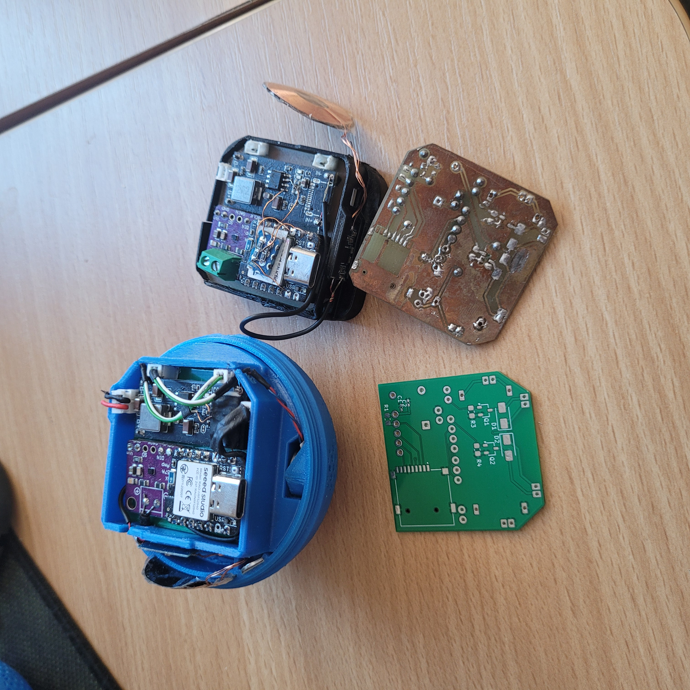
Mikroprocessor
ATmega, ESP, Rpi, nRF?
Mikroprocesorů je momentálně na truhu dost každý se hodí na něco jiného mně s výběrem pomohl vedoucí práce který mi doporučil Xiao nRF52840 Sense
Se všemi ostatními processory krom nRF jsem se setkal Arduino, ESP a RaspberryPi boardy jsou přeci jen velice rozšířené.
Čipy od Nordic Semi Conductors jsou vemli energeticky nenáročné proto jsou ideální pro bateriově napájená zařízení.
Jedna z nevýhod však je složitost programování, pro využití plného potenciálu je ideální využít nRF Connect for VS který trocu usnadňuje práci se složitým Zephyrem.
Zajímavostí pro Nordic Semi je také vydávání IC které rozšiřují vlastnosti jejch procesorů jako napřikald nRF21540 nebo nRF7002 ovšem na malých vývojových deskách je nečekejte
Zpětně mohu hodnotit že bych nRF neměnil což se zrovna o modelu vývojové desky Xiao nRF52840 Sense říct nedá.
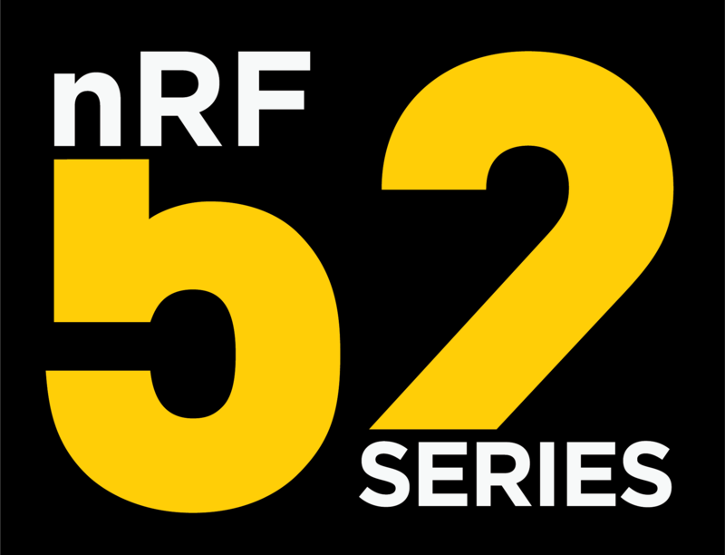
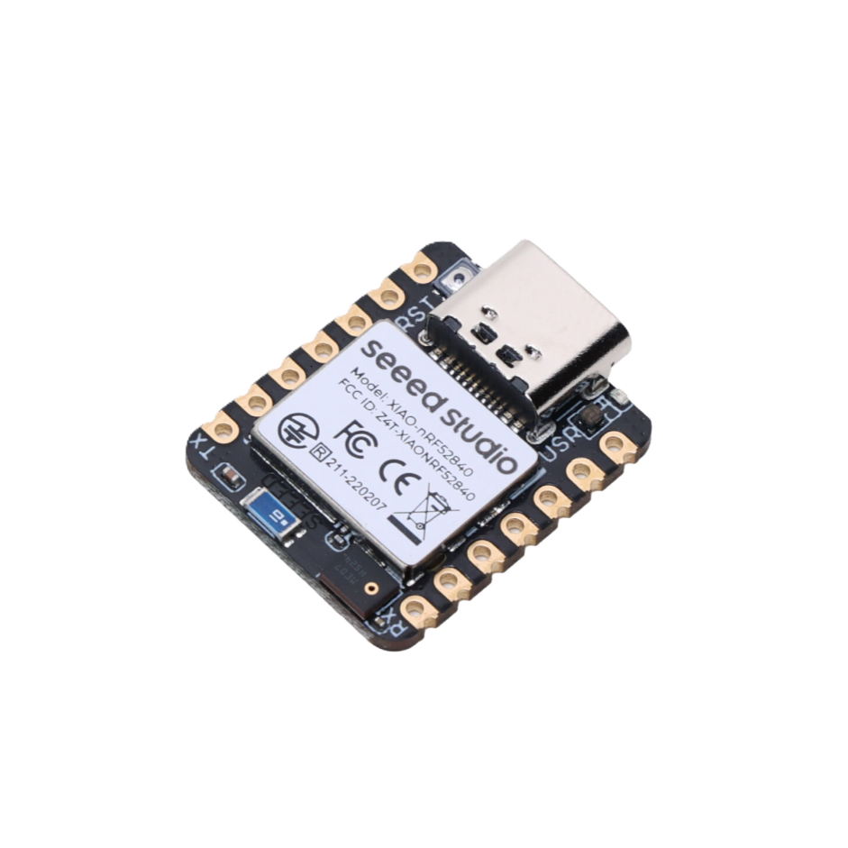
Xiao nRF52840 Sense
Co mi na něm vadí?
Zprvu bych chtěl říci že nemám v plánu tuto vývojovou desku nějak moc hanit každopádně, se u ní vysktují některá neštastná rozhodnutí která mi vývoj s ní úplně neusnadnila, každopádně s momentální cenou 12€ nabízí slušné parametry
Velikost 21 x 17.8mm
BLE 5.4
1 MB flash a 256 kB RAM
Standby spotřeba <5μA
Zabudovaný mikrofon a IMU
Abych věci také uvedl na pravou míru bylo by odemně fér říci že většinu neduh, které tato deska má řeší její verze Plus a z uvedených informací výrobcem úplně vše nová generace XIAO nRF54L15
Tlačítko
Sice se to může zdát jako drobnost avšak tlačítko je nutné k restartu a také dovjklikem k otevření u2f bootloaderu. Typ zvoleného tlačítka dělá z těhle operací vlemi nepříjemný zážitek jelikož je složité na zmáčkntí proto je potřeba mít u sebe nějaký špičatější předmět a nejlépe nevodivý
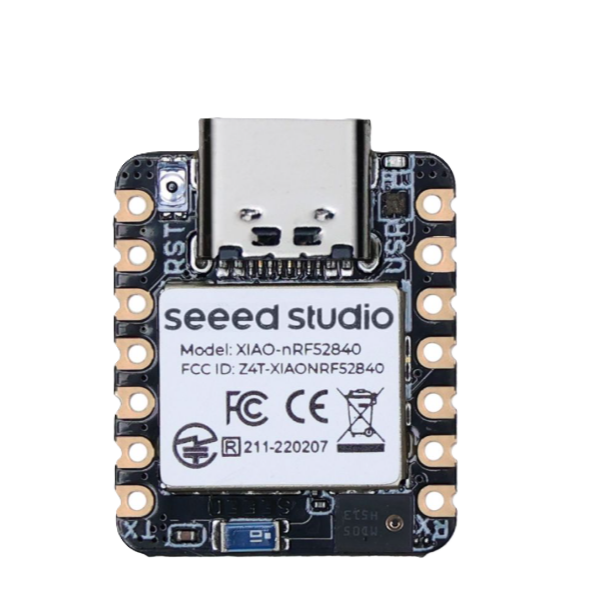
Bat pady
Další má stížnost stměřuje k ploškám k připojení (připájení) baterie plošky jsou na spodku desky dost blízko pinům a řekl bych že je poměrně snadné je utrhnout nevím jeslti to je jen mnou ale toto umístění opět velice znepříjemňovalo vývoj zařízení. U verze Xiao nRF52840 Sene Plus již toto umístění bylo změňeno
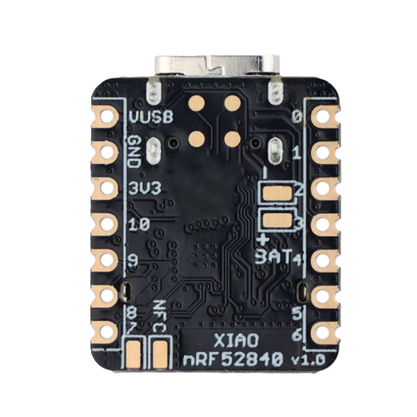
Nabíjecí obvod
Pro někoho výhoda pro mně utrpení tak bych nazval nabíjecí obvod který je součástí Xiao jelikož používám 1800mA baterii nechtěl jsem ji nabíjet pouze 100mA který tent oobvod umožňuje. Avšak pozastavení tohoto obvodu není možné proto jsem byl nucen přidat mezi xiao a baterii diodu která nabíjení brání.
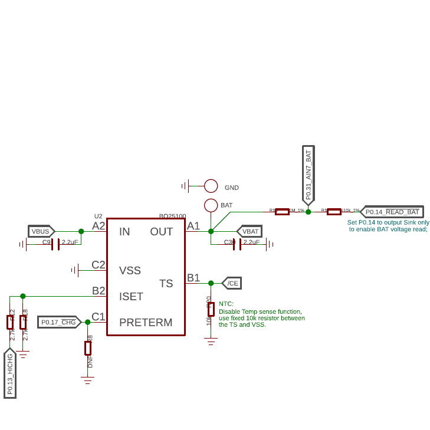
Moduly
Proč zrovna tyto?
Slovem "Moduly" jsou myšleny předpřipravené elektrické obvody / součástky sloužící k nějakému specifickému účelu. V mém případě je to například Modul bezdrátového nabíjení nabíjení Li-pol baterie, I2S audio zesilovač k přehrávání zvuku, modul sd karty
Moduly jsem zvolil jelikož jsem neměl moc zkušeností s návrhem vlastních plošných spojů.
Můj osobní názor na moduly je smíšený na jednu stranu je veš hotovo stačí zkontorlovat jestli je vše jak výrobce uvádí a je to skoro bez práce. Úspora času při pájení nebo absence označování všeho pro výrobce PCB je také značné zpříjemnění a v případě závady jde modul za modul a vývoj pokračuje.
Každopádně tyto "levné" moduly občas klamou a nadělají víc škody než užitku. Také zbytečně zabírají místo to co by na vlastním PCB zabralo pár milimetrů je někdy v centimetrech.
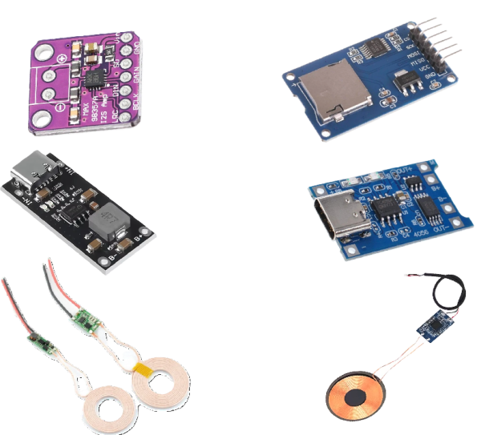
DFR-05495
Tento modul bezdrátového nabíjení 5V/1A považuji za nejhorší věc co jsem mohl zvolit příšerně se zahříval. Vysílač až tavil vytisknutý obal obal z PETG. Rozměry oproti jiný jsou zarážejcí kdy cívky mají 2,5mm. Absence stínícího prvku a srozumitelného datasheetu také nepotěší. Chápu že je to moje špatné rozhodnutí každopádně za cenu okolo 200 Kč je to opravdu smutné nabízet takovou kvalitu.
Qi Reciever
Tento modul má 5x nižší cenu sice zvládne pouze 0.6A, ale rozměry jeho cívek jsou 0,7mm (s ferit folií). K mírnému zahřívání tu také dochází, avšak jsem nebyl schopný určit zdali se jedná o desku přijímače, cívku nebo bezdrátovou nabíječku co jsem používal. Modul je dodávaný s feritovou fólií kteráfunguje jako stínění ostatní elektroniky. Jedne z velkých neduhů tohhoto modulu byl ten že jsem vše pečlivě nezkontroloval, výrobce prohodil barvy drátů tedy červený GND zelený 5V a takto jsem přišel o 2. Xiao
Nabíječ TP4056
Tento modul ve své podstatě nedělá nic špatně indikuje nabíjení nabitý stav a disipuje přebytečnou eknergii jako teplo k nabíjení li-pol. Jeho nabíjecí proud je až 3A pro úpravu je třeba přepájet Rprog. Výrobce a obchody často uvádějí že defalulteně je nastaven 1A avšak po mněření pár odporů a kontorle s datasheetem se spíš jenalo o 1,3A. Kvůli tomuto modulu byo také nutné přidat zpětnou diodu mezi xiao a baterii, jelikož zpětný proud který nabíjecí modul po připojení k debugování vytvářel modul spálil.
IP2312
Na tento nabíjecí modul jsem přešel z důvodu rozměrů a technologie fast switching, která přebitečnou energii nedisipuje jako teplo ale aktivně ji potlačuje pomocí fast switchingu. Také zde narazíme na ochranu před zpětým proudem takže ani Xaio připojené k PC mu neublíží
I2S zesilovač
Tento modul je jeden ze těch, který by na PCB zabral jen pár milimetrů zatímco takto má 19x18mm jeho cena v ČR je také překvapivě visoká v nesposlední řadě zde chybí ochrana proti přepólování a takto jsem přišel o 3 tyto moduly.
Micro SD SPI
Tento modul byl projevem spíše mé neznalosti a to jak připojit SD kartu přímo k mcu, jak v zephyru správně nastavit a přetypovat piny pro SPI. Každopádně jsem si tímto modulem velice zavařil jekož potřebuje stabilních 5V (kvůli level shifteru který vlasntě ani nebyl třeba) nicméně Li-pol má při úplněm nabití 4,2V v tomto stavu však nestráví moc dlouho a její napětí dále klesá z toho to důvodu se mi čato stávalo že program kartu nemohl otevřít pro čtění. Tento modul už nepoužívám a karta je napojena k Xiao přímo přes SPI
Obvody
Jednocduchá cesta jak ovládat a měnit intenzitu motorků je pomocí PWM, pro to jsem využil tranzistorové zapojení řízení indukční zátěže.
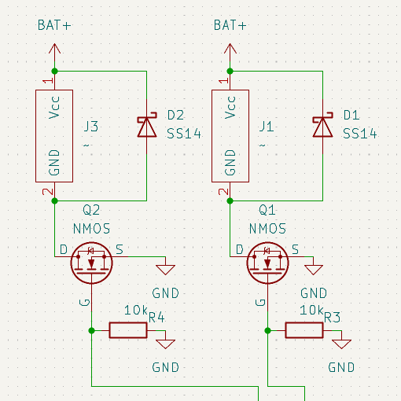
U sd karty jsem řešil stabilitu proto jsem přidal pull up resistor na CS a kondenzátory k redukci proudových špiček.
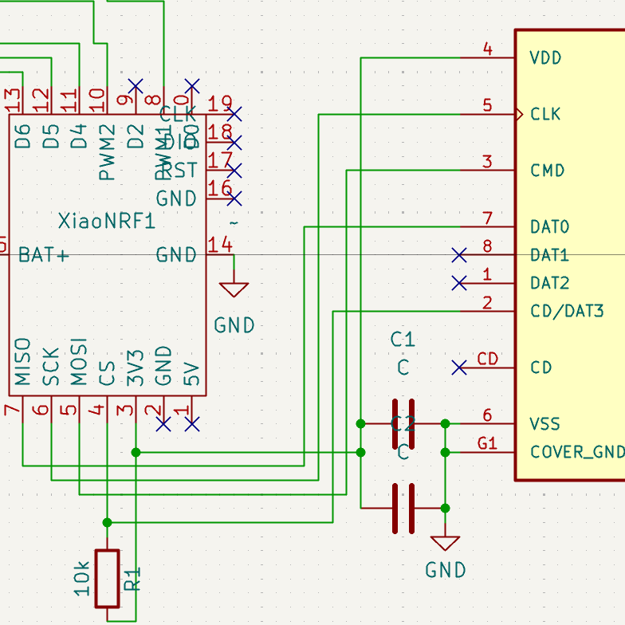
PCB
a jak na to
V prvních verzích jsem zkoušel vše zbastlit a vlastně jse více přemýšlel kudy vést kabílek jak co připojit a jestli někde nevznikl studený spoj než abych řešil praktičtější otázky.
K téhle metodě bych se už nevrátil po tom co jsem se naučil si spoj vyrobit podomácku.
Jako první jsem zkoušel fusion 360 který má v sobě PCB designer EAGLE v prgramu bylo clekem složité se vyznat a proto jsem rychle zkusil kiCad, který je o dost intuitivnější.
Následoval jsem výuková videa které naleznete vpravo, podle nich jsem byl schopný sestavit můj první návrh
PCB - výroba
a jak na to doma
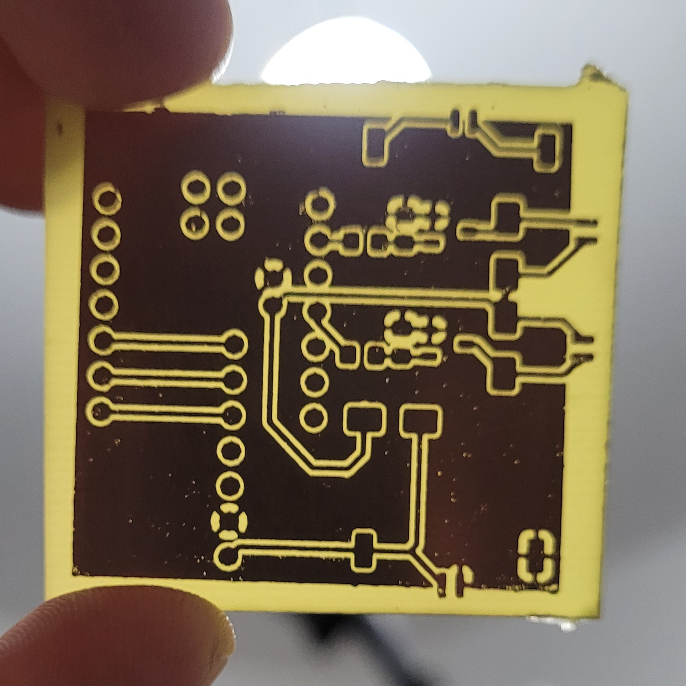
Jelikož jsem hned nechtěl spoj objednávat abych po týdnu zjistil co je šptně. Rozhodl jsem se pro domácí výrobu
V základu jsou dvě metody jak spoj vyrobit gravírování / leptání. K gravírování je třeba CNC frezka zatím co k leptání stačí tonerová tiskárna.
Osvojit si metodu toner transferu a leptání mi chyvíli zabralo proto se pokusím na mé chybi upozornit
Potřebné věci k této metodě jsou Cuprexit, tonerová tiskárna / lihová fixa, fotopapír / toner transfer papír, kyslina solná a peroxid vodíku / chlorid železitý
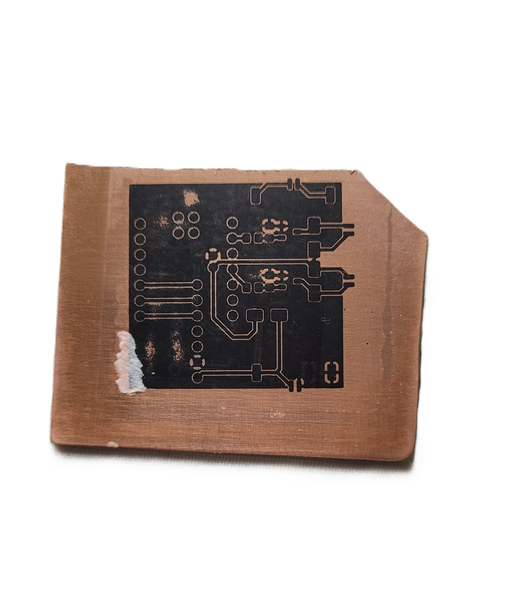
Princip toner transfer – nanášíme vrstvičku toneru / lihového fixu na kuprexitovou destičku. Ta následně funguje jako ochranný film zabraňující kyselině ve vyleptání mědi pod ním.
Výroba šablony: Fix
Je-li váš design většího formátu a máte-li pevnou ruku, tak stačí na kuprexit návrh namalovat a přejít k leptání.
Výroba šablony: Toner transfer
Je-li váš design složitější / jemnější, je třeba ho vytisknout na speciální toner transfer papír.
(Já tento papír neměl, takže jsem zkoušel plno alternativ: pečicí, samolepkový, časopisový lesklý.
Jedna z nich fungovala, a to druhá strana fotopapíru HP. Tento papír je ale náchylný na nanášení,
proto velice doporučuji pořídit si ten specializovaný papír, ušetří vám to trápení).
Tisk návrhu na Toner transfer papír
Nejlepší způsob, jak vytisknout náš návrh, je následující: Vezmeme obyčejný papír, napíšeme na jednu stranu „spodní strana“ a nakreslíme šipku směrem dovnitř tiskárny. Následně vytiskneme vyexportovanou Cu vrstvu z KiCadu.
Pozor, návrh musí být zrcadlen, jelikož ho budeme na desku nanášet opačně, než se tiskne.
Jakmile se vytiskne návrh na obyčejný papír, můžeme vystřihnout trochu větší kus transfer papíru a přilepit ho izolepou ve směru šipky, kterou jsme si nakreslili předtím. Pokud je to na vás příliš složité a papíru vám není líto, můžete ho tam dát prostě celý. Doporučuji mít návrhy spíše širší než delší, jelikož se může toner špatně doplňovat při tisku na tento speciální papír.
Poté, co máte návrh zrcadlově! vytisklý na papíře, je třeba ho přichytit na kuprexit. K tomu můžete použít heat press nebo žehličku a hladkou látku bez vzoru (nepoužívejte papírové kapesníky nebo kuchyňské utěrky – vzory a tečky způsobí nerovnoměrný tlak a špatné přilnutí toneru k destičce).
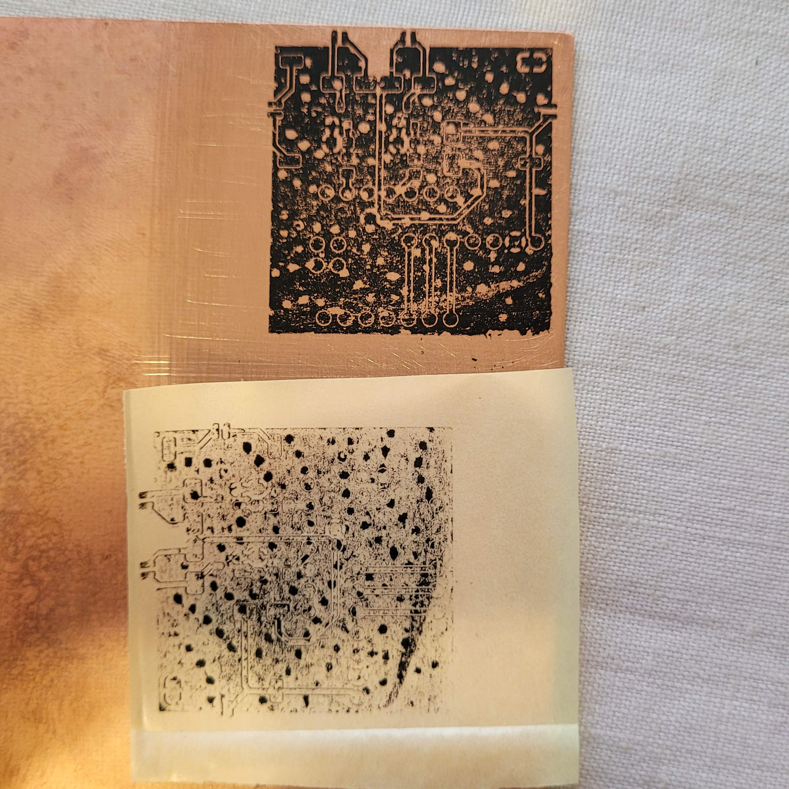
Příprava cuprexitu
Před nažehlením návrhu na destičku je třeba ji obrousit, jelikož se na ní nachází protioxidační vrstva.
Já používal nejprve brusný papír 800 a 1000, následně isopropanol
(zpozorvání mi přišlo že čím je deska lépe očištěná tím je finální výsledek lepší a bez defektů).
Přenesení návrhu na cuprexit
Na žehličku netlačte moc, mohlo by dojít k rozpití návrhu (obrázek vpravo cesty nejsou ostré a spojují se). Je třeba držet mírný přítlak,
žehlička by měla být nastavena na nejvyšší teplotu a pára musí být vypnuta.
Po cca 2–4 min máme hotovo, desku necháme zchladnout tak, aby na ni bylo bezpečné sahat,
pokud se objeví nějké defekty jak je vidět na obráku můžeme je opravit lihovou fixou. (se správným papírem a očištěmím jsou defekty minimální)
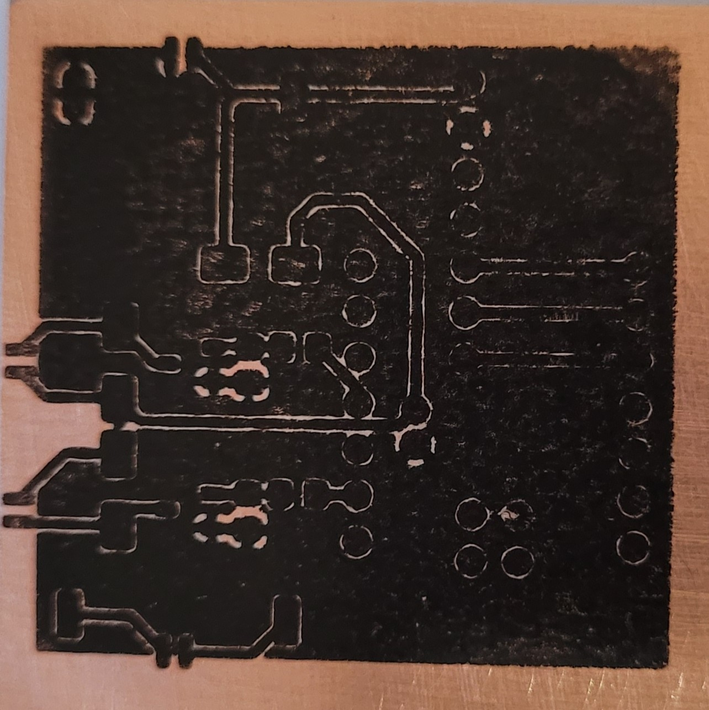
Leptání
V případě chloridu železitého ho jen nalijeme do nějaké plastové misky, vložíme destičku s návrhem a provádíme míchavé pohyby.
Pokud používáte kyselinu solnou (30% HCl) a 3% peroxid vodíku, je třeba vytvořit roztok 3:1 kyseliny solné a peroxidu.
Pak už jen vložíme PCB a provádíme míchavé pohyby.
I když jsem používal kombinaci HCl a peroxidu tak bych doporučil chorid železitý pokud spoj děláte víckrát. Sice je leptání zdlouhavější ale nenadýcháte chloru který se uvolňuje.
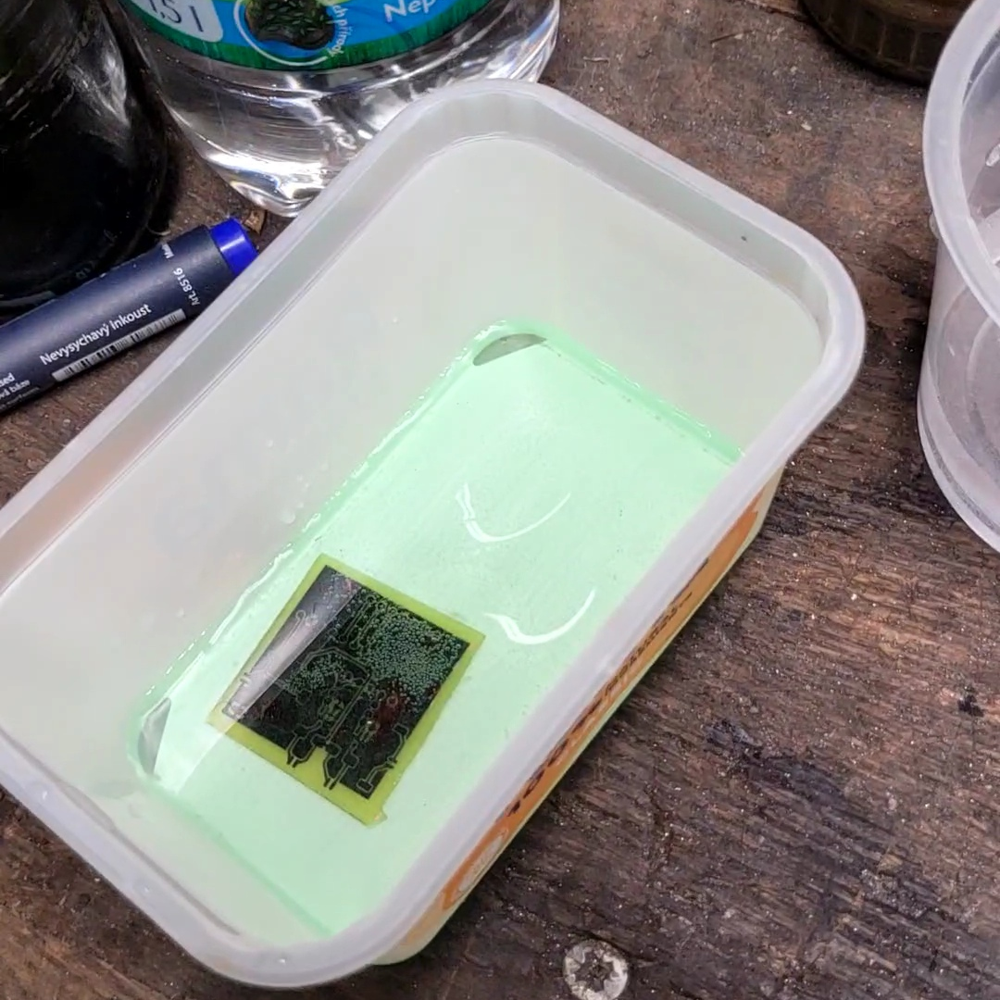
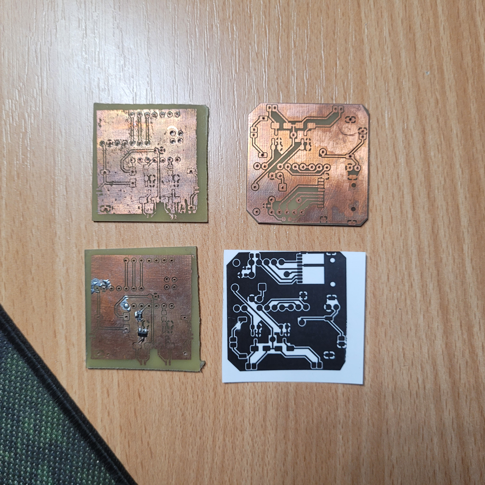
Otvory
Další krok je vyvrtat díry pro THT součástky. Nejjednodušší bylo si středy namáčknout něčím špičatým (jehla/šídlo/raznice), následně jsem použil vrták 0,8 mm pro dírky a spoj byl hotov. Většinou se používá ještě nějaké tinning solution a solder mask, nicméně pro účely prototypu mi to bohatě stačilo.
Progress
Na obrázku si můžete všimnout, kam až lze metodu PCB toner transferu dotáhnout. Ano, celkem jsem nevyrobil pouze tři verze, ale přibližně deset. Přitom horní dvě desky na obrázku považuji za nepovedené (rozpíjející se pady, nekonzistentní GND plocha), zatímco pravou dolní desku bych hodnotil jako velmi dobrý výsledek na poměry domácí výroby.
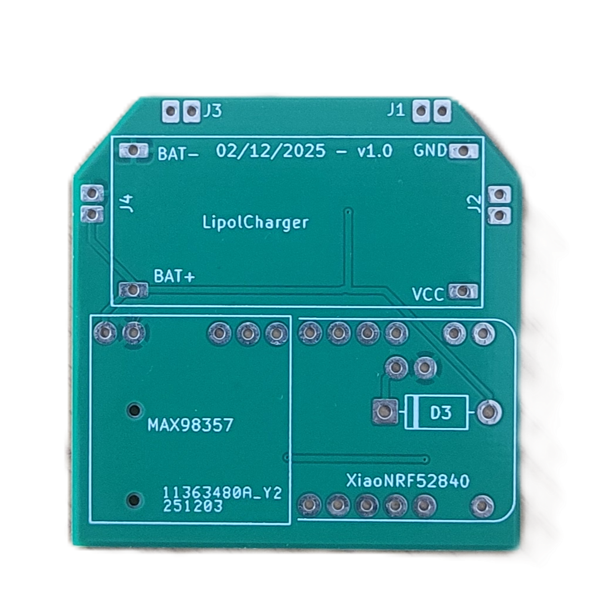
Po několika iteracích jsem uznal, že je čas k objednání plnohodnotného spoje. Rozhodl jsem se pro společnost JLC. Cena je zde dost přívětivá, mně vyšel jeden spoj na 0,90 €. Musím také pochválit informace o průběhu objednávky. Podrobnosti, jak spoj objednat a nastavit parametry, jsou ve videích výše.
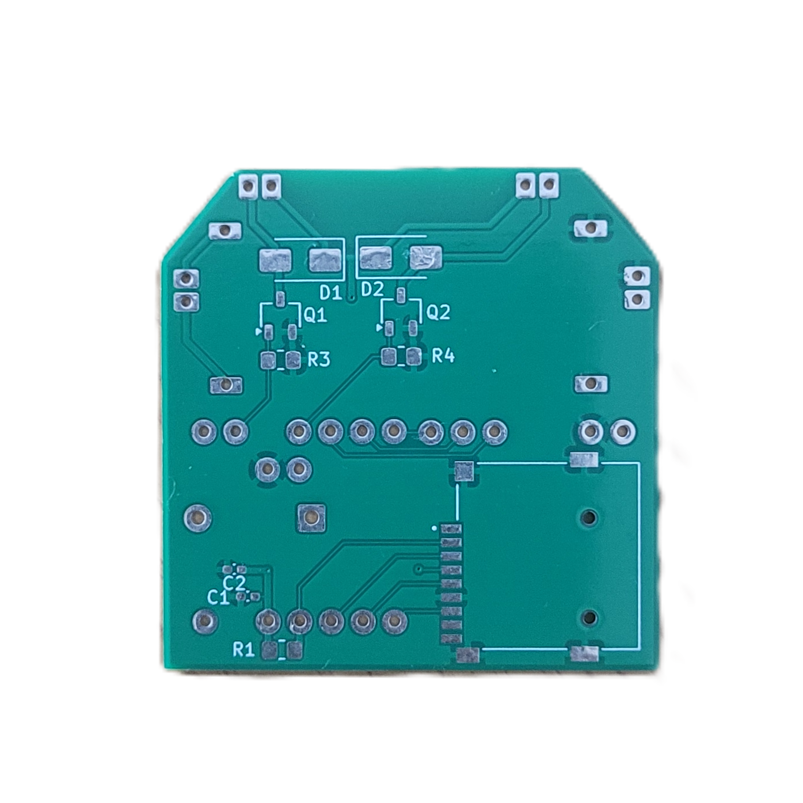
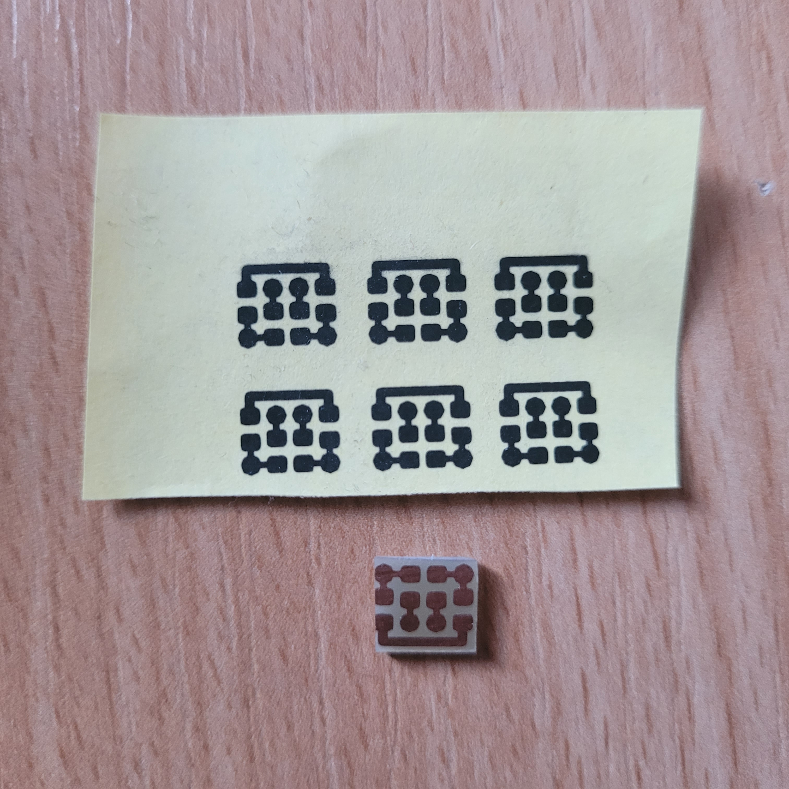
Addon
Původně jsem předpokládal, že stav nabíjení budu schopen kontrolovat pouze pomocí vnitřního analogového pinu připojeného na BAT+. Z toho důvodu jsem na hlavní PCB nepřidal logiku pro separátní hlídání stavu nabití a probíhajícího nabíjení.
Snímání napětí přímo na BAT však nefungovalo spolehlivě, protože při zátěži (přehrávání audia nebo zápis na SD kartu) docházelo k napěťovým poklesům. Dalším problémem bylo, že nabíjecí modul nenastaví cílových 4,2 V okamžitě po připojení, zatímco já jsem vyžadoval rychlou odezvu hračky na připojení nabíječky.
Výstupy LED driverů z IP2312 (piny D1 a D2) jsem nemohl připojit přímo jako logické vstupy, jelikož jejich napětí je příliš nízké (přibližně 1,4 až 1,8 V) a k tomuto účelu nejsou primárně určeny. Uvažoval jsem o využití vestavěného komparátoru (LPCOMP) v nRF52840, který by mi umožnil nastavit trigger na zvolenou úroveň napětí. Tento komparátor je však na čipu pouze jeden, takže touto cestou nebylo možné sledovat oba stavy.
Rozhodl jsem se tedy připojit D1 a D2 na analogové piny. Zde mě však u čipu IP2312 zarazila funkce pinu D1, který slouží zároveň k nastavení typu baterie (Battery Type). Musel jsem proto zvolit dostatečně vysoký odpor děliče, aby integrovaný obvod vyhodnocoval stav jako NC (Not Connected) a nezměnil nabíjecí charakteristiku.
Vyrobil jsem tedy přídavný spoj (addon), který nese dva odporové děliče určené ke čtení stavových LED pinů. Přestože by pravděpodobně bylo možné piny připojit napřímo, zvolil jsem cestu snížení napětí, abych předešel poškození modulu Xiao v případě neočekávané chyby nabíjecího modulu.
Co se nezměnilo
Reproduktro se od původní verze neměnil je jím AS03208AS-HT. Tento reproduktor je poměrně těžký a pro malou hračku i velký, ale disponuje 3W výkonu a frekvencemi od 150 Hz do 20 kHz i přes jeho rezměry do hračky padne dobře
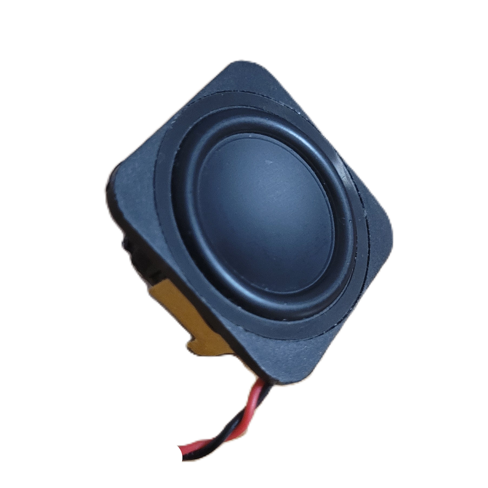
Baterie se také nezměnila stále použímvám pomněrně vlekou 1800mA LiPo nevýhodou je docela měkký obal který se mi povedlo ve 2 případech poškodit.
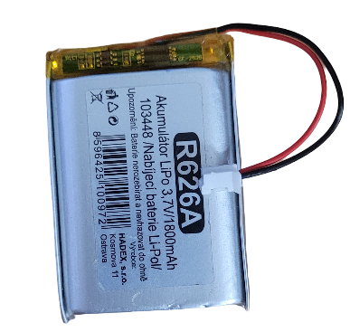
Rezonanční motůrky tyké zůstaly, svoji úlohu plní dobře vytk bych však typ zvolených vodičů jsou dost krátké a tenké kdybyb byli delší a zakroucené už z výroby tak by to bylo ideální.
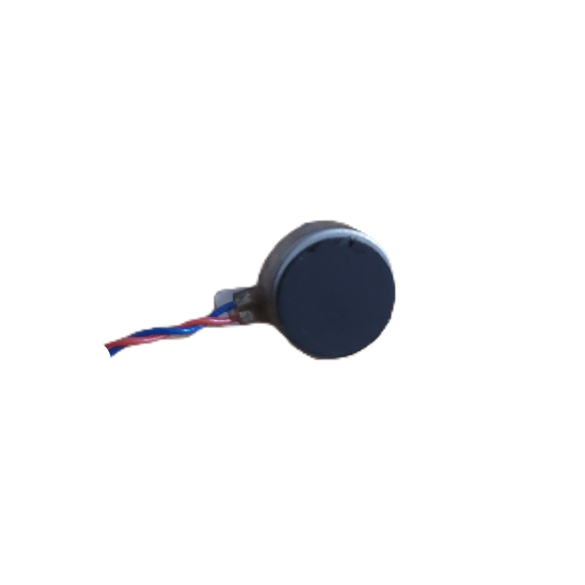